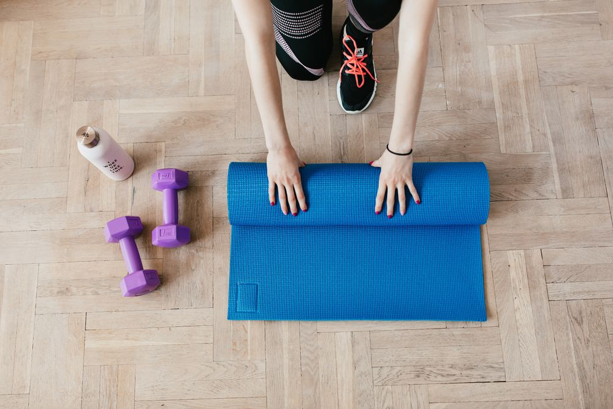
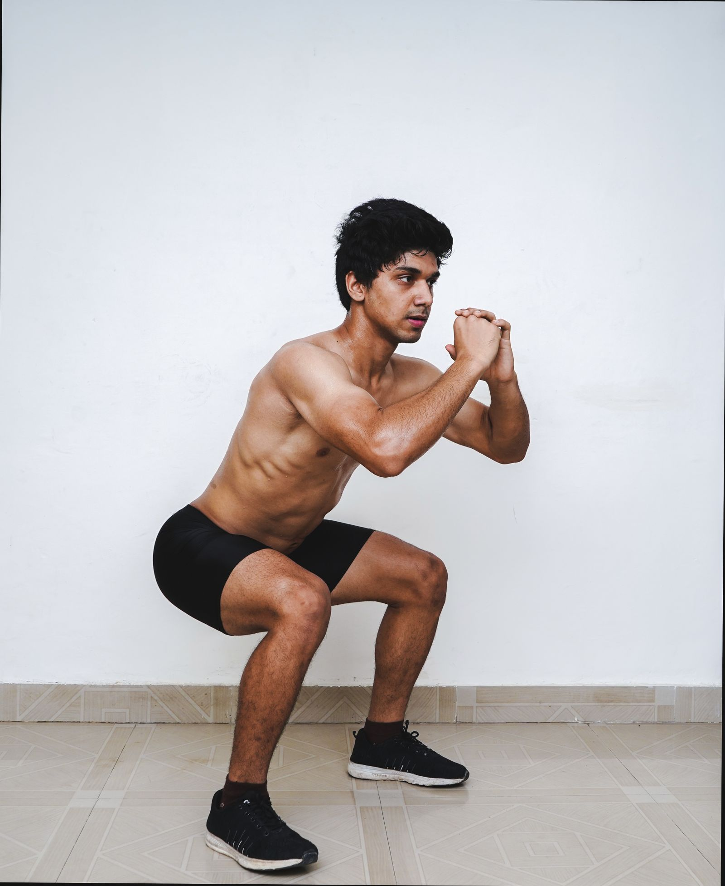

+ THE MOVEMENT JOURNAL
A LITTLE KNOWLEDGE.
MORE CONFIDENCE.
General education, useful questions and a fresh perspective on your movement journey.
 MOVEMENT JOURNAL / 01
MOVEMENT JOURNAL / 01Preparing for your first physiotherapy assessment
A little preparation can make room for a better conversation.
Read the journal MOVEMENT JOURNAL / 02
MOVEMENT JOURNAL / 02Understanding the rehabilitation process
Why individual goals and regular review matter.
Read the journal
MOVEMENT JOURNAL / 03Returning to activity, one step at a time
Make your goals part of the conversation.
Read the journal
MOVEMENT JOURNAL / 04Building consistent movement habits
Create space for your clinician-provided plan.
Read the journal+ YOUR NEXT CHAPTER
LET’S GET YOU
MOVING FORWARD.
A conversation is a good place to start. Tell us what you want to get back to.
Request an Assessment Request only. A clinic team must confirm your session.